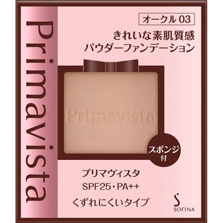

返回列表
产品名称：プリマヴィスタ きれい素肌質感パウダー

花王 プリマヴィスタ きれい素肌質感パウダー オークル０３
メーカー 花王
JANコード 4901301332103
商品の特徴
ＳＰＦ２５・ＰＡ＋＋
くずれにくいタイプ
- 成分・分量
- 【成分】
マイカ、窒化ホウ素、ポリメチルシルセスキオキサン、メトキシケイヒ酸エチルヘキシル、ジカプリン酸ネオペンチルグリコール、（ジフェニルジメチコン／ビニルジフェニルジメチコン／シルセスキオキサン）クロスポリマー、（ビニルジメチコン／メチコンシルセスキオキサン）クロスポリマー、パーフルオロオクチルトリエトキシシラン、ジメチコン、ポリシリコーン－９、水添パーム核油、ヘキサ（ヒドロキシステアリン酸／ステアリン酸／ロジン酸）ジペンタエリスリチル、イソステアリン酸水添ヒマシ油、（ジイソステアリン酸／水添ロジン酸）グリセリル、塩化Ａｌ、エチルパラベン、タルク、酸化チタン、酸化亜鉛、酸化鉄、水酸化Ａｌ、メチコン、トリエトキシカプリリルシラン
- 用法及び用量
- 【使用方法】
（１）プリマヴィスタの化粧下地でお肌をととのえた後に、添付のスポンジでお使いください。
（２）スポンジに適量をとり、軽くすべらせるようになじませます。
（３）もう一度少量をとり、額や目のまわり、口のわまりを仕上げます。
※たたいたりおさえたりするよりも、すべらせた方がうすく均一についてきれいに仕上がります。
※水なし専用のファンデーションです。スポンジに水を含ませて使用しないでください。